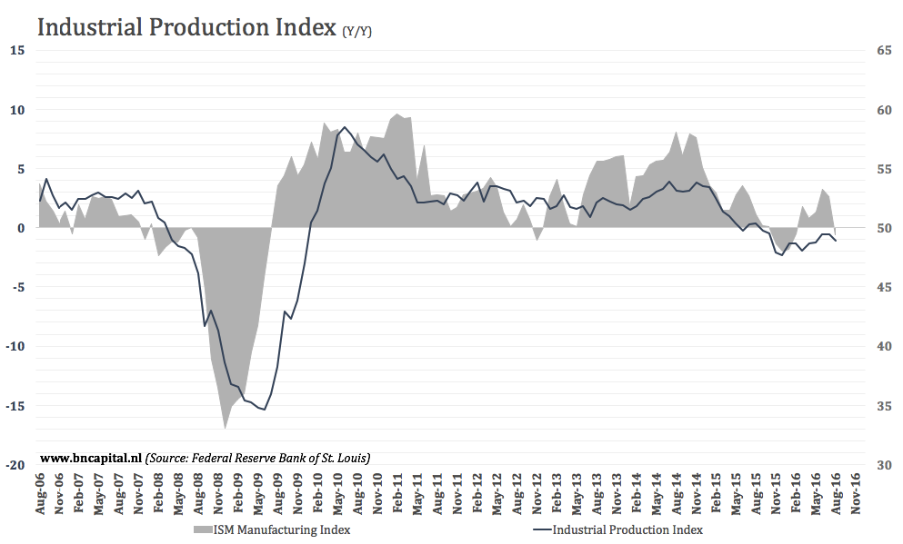
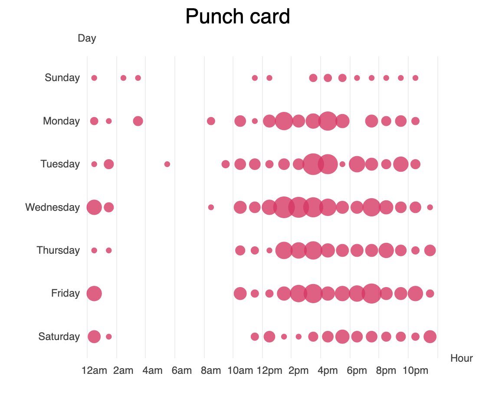

A technique that I had not seen very often that Cairo introduces was to not just plot the raw numbers but plot the difference between an average or a given indix origin. This can emphasize changes, expecially seasonal changes or an actual trend.
This graph really highlights the effects of the Great Recession on the manufacturing industy in St. Louis. The plotting using a difference shows how drastic the change in production was.
The second technique that Cairo utlized was a log and ratio scale. This allowed the reader to undestand the bigger story to the data than what is presented by a by a different scale. Plotting ratios can show changes in the data that are not apparent otherwise. A logarithmic scale can show the rate of growth of populations that are exponential.
Because there is such a wide gap in income, a logarithmic scale allows us to see how it is distributed in a smaller area. It is a technique that needs to be commented on, which it is in this case and it helps the data look connected.
Cairo ends with inspiration for the reader by introducing less common `types of visualization. Cairo seems to be saying how effective a unique and minimalistic visualization can be. He uses horizon charts as an example of showing changes in a very space efficient and beautiful way. He stresses how important typology, color, and composition are in visualizations.
I really like this graph because it is like a histogram but different. It shows the weight of people punching in at different times. I like how there is enough space to see the whole week in a small form factor.